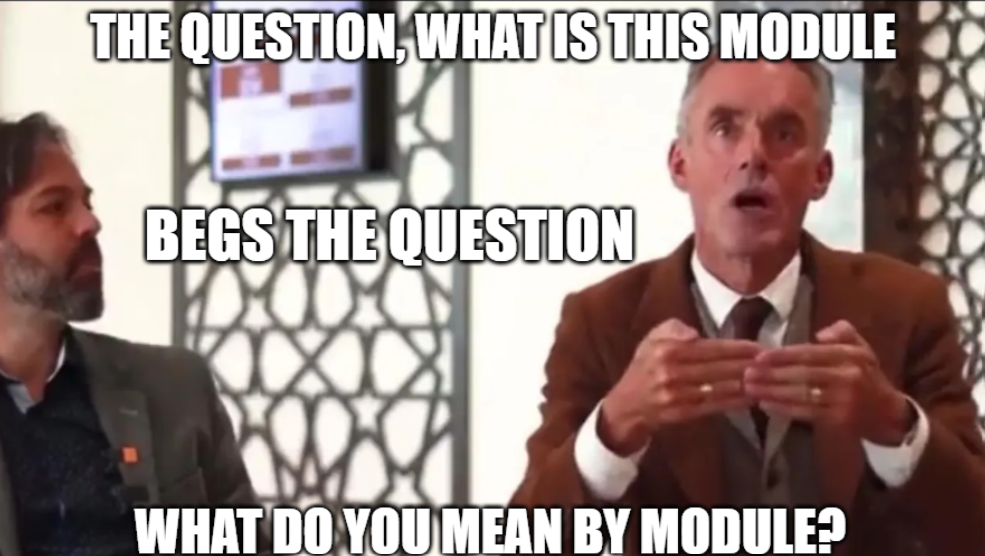

Blog
I Won an Award
I was slightly set back when I recently received a mysterious email from an anonymous University account claiming I was due congratulations. It proposed I was the best in the entire University at one of my modules. Of course, they didn’t tell me which one, and I had to wait four to six geological ages to see the response. I also passed the email through a scam detector, such is my opinion of my academic ability.
So yeah.
I’m the best at ‘Physics in Society’. Take from this what you will.
Existential Meaning
Now, the next logical question is what do we mean by Physics in Society?

To discover this, I burrowed deep into the bowels of the dreaded module handbook. The corporatised slop embracing its pages is only worsened by the early 2000s formatting, as I scoured its pages, searching for the truth. Then I realised I sat this module so I can just tell you.
It involves a mix of: the history of science; the philosophy underpinning that history; the philosophy of science itself; the morality of science; and science communication to the general public.
My contribution to this module consisted of a superlative Interstellar scientific analysis video essay (whose rocky history I may tell another time), and an essay assignment where my rambling style allowed me to abuse quantum hysteria, the criticality of philosophy in the field of physics, and the irrelevance of Einstein to society.
But wait...
What Do We Mean by Society?
Who is society? There is no such thing! There are individual men and women and there are families...
— Margaret Thatcher, 1987
Here, the Iron Lady may have had a point. Just try to imagine society. What does it look like? What are we defining it as? You may respond ‘a large group of people that live in the same way’, but can a large group of people ever live in the same way? Most certainly not in 2026, never mind in Utopia.
So what is it? A large group of people who on average sometimes share some characteristics apart from subcultures who don’t, and who live on the same bit of land, except when we talk about foreign nationals, in which case they don’t? Can we really advocate for a meaningful term of any greater demographic size than family?
No.
What Do We Mean by Physics?
If we can’t meaningfully group humans together in a large category, doesn’t it follow that the scientific ideas and theories we assign to school subjects like chemistry and biology are just arbitrary categories, and thus there is no such thing as physics either? (Shhh just ignore this point…)
Physics is the natural science studying matter, energy, space, and time, all through the lens of mathematics. Imagine those infographics of the tiniest atom and their nuclear forces, zooming out into the human realm of metre rulers and gas laws, all the way to solar flares and galactic cannibalism, whilst transparent sums and equations flash across the screen, subliminally suggesting this is the peak of human knowledge.